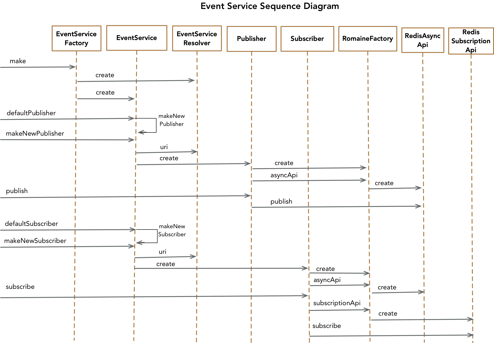
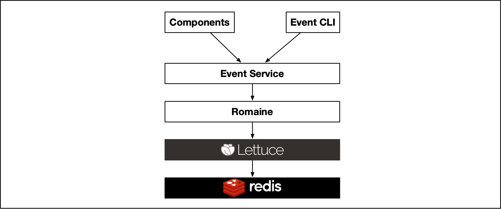
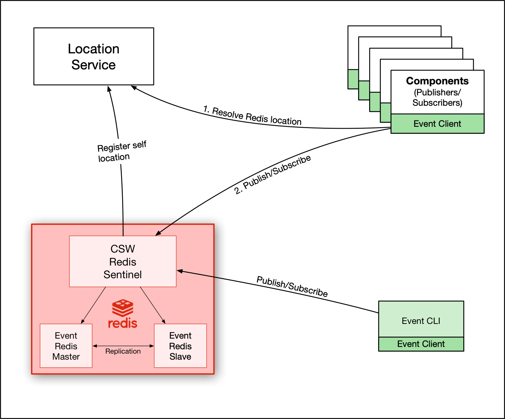

Event Service
Introduction
Event Service is a PubSub service which allows publishing of and subscription to CSW Events based on an Event Key, which is a combination of a component’s Prefix and Event Name. Event Service is optimized for the high performance requirements of events as demands with varying rates, for ex. 100 Hz, 50 Hz etc., but can also be used with events that are published infrequently or when values change. The end-to-end latency of events assured by Event Service is 5 milliseconds in typical observatory conditions. It also ensures ordered delivery of events with no event loss within performance specification.
In the TMT control system, events are used in a variety of circumstances. Events may be created as the output of a calculation by one component for the input to a calculation in one or more other components. These demand events are usually published at a specific rate and are usually calculated for a specific use or device. Other events indicate the occurence of a specific event in the control system that is of interest to other systems. For instance, the opening/closing of a shutter in a detector system is marked with an event.
Technology Choices
There were two good candidates for the backend of Event Service - Apache Kafka and Redis. The Event Service API is implemented with both these backends and performance testing was done to select one particular backend which would best satisfy the service latency requirements. Results of the performance tests can be found here. Redis was the best choice for the backend as it turned out to be better at providing low latency unlike Kafka which is more suited for high throughput systems. Hence you can see 2 implementations of the API in the Event Service client. The code is structured in a way that it is easy to switch the implementations. The Kafka implementation is being retained for possible future use.
Implementation Details
EventServiceFactory in csw-event-client is the entry point in the Event Service. It provides low-level APIs to make a new EventService from Scala and IEventService from Java. It takes an EventStore which could be either RedisStore or KafkaStore.
These APIs are not needed by component developers. The CSW framework provides the correct service implementation.
Depending on which store is provided to the EventServiceFactory, an implementation of EventService is returned which could be either KafkaEventService or RedisEventService. The default store is set to RedisStore. Hence the service returned by default is RedisEventService.
Below is a sequence diagram showing the important entities involved in the implementation of Event Service. It captures the flow of the code from creation of EventService via EventServiceFactory through the publishing/subscription of events to the underlying Redis implementation product.

EventServiceFactory provides overloads of the make method that allow creation of EventService using host-port as well as using LocationService to resolve the implementation product. The EventService provides APIs to create an EventPublisher and an EventSubscriber, which allow users to publish and subscribe to events. It provides both APIs:
-
to make new instances of publisher/subscriber
-
to use a default instance of publisher/subscriber
When to use which API is documented in this section of the Event Service programming documentation.
Event Service uses Redis’ PubSub for publishing and subscribing to events. And to support the feature of getting the latest event on a subscription, the set operation of Redis DB is used.
Romaine
At a lower level, we have created a library called “Romaine” to communicate more efficiently with Redis as is shown in the following figure.

Romaine is a Scala library built over the Java Redis client library called Lettuce. Romaine provides additional rich APIs over the existing functionality offered by Lettuce including these additional APIs useful to CSW:
-
Async API: Provides asynchronous API (
romaine.async.RedisAsyncApi) for various redis commands likeget,set,publishetc. -
Reactive API: Provides API for Subscription and Pattern-Subscription (
romaine.reactive.RedisSubscriptionApi). On subscription, it returns an Akka Stream of Events which on execution materializes toRedisSubscriptioninstance which gives handle to unsubscribe to events. -
Keyspace API: Provides APIs to watch Keyspace Notifications (
romaine.keyspace.RedisKeySpaceApi). This is a rich API built on Akka Streams which provides not just the change events that happen on keys (for eg: Update, Removal etc.) but also the old and new values corresponding to those keys.
Event Service uses Async API for publishing and setting the latest event, and Reactive API for subscribing to events and patterns. Keyspace API is used in Alarm Service.
Event Publishing
Publishing of events in the Event Service client involves two things in Redis:
-
Publish the event in Redis resulting in distribution of the event to all subscribers
-
Setting the value of event against the event key in Redis. This provides persistence of the most recent event and allows a client to
getthe most recently published event. This also supports the need to provide a client with the most recently published event whenever a new subscription happens.
In case the Event Service is not available (i.e., Redis is not available or crashes), the Publish APIs will fail with an exception EventServerNotAvailable. If due to any other reasons, the publishing of events fail, the publish APIs would throw a PublishFailure
Event Subscription
A subscription to one or more event keys returns an Akka Stream of events. Subscriptions to concrete event keys as well as to glob-style patterns is supported. With pattern or glob-style subscriptions, the subscriber receives all the events with event-keys that match the provided pattern. In both cases, the subscriber gets a handle to an instance of EventSubscription that can be used to unsubscribe.
The subscription API supports subscribing with different modes to control the rate of events you receive. Two modes are provided - RateAdapterMode and RateLimiter mode. Details of when to use which mode could be found here.
Subscriber API also provides a get API which could be used to fetch the latest events for the specified event keys.
In case, when the underlying event implementation is not available, the Subscribe APIs would fail with an exception EventServiceNotAvailable
Architecture
In order to allow components to discover Event Service, it is necessary to register it with the Location Service including the underlying product, which here refers to the Redis instance (particularly Redis Sentinel).
For high availability of Event Service, we use the Redis Sentinel along with master and slave instances of Redis. Master and slave are configured in “replication” mode.
The Sentinel’s responsibility is to promote the slave as master when master goes down. It is important to note that when master goes down, the “location” of Event Service remains the same because the location of Event Service is the location of Sentinel and not of master or slave. The master and slave Redis instances are dedicated for events, however Sentinel is shared across CSW Redis-based services. As Sentinel caters to more than one master, we need to specify which master to connect to for Event Service. That is configured in reference.conf in csw-event-client project.
csw-event {
redis {
masterId = "eventServer"
}
}Once the location is registered, components and the event CLI can resolve the Event Service location and start publishing/subscribing.
